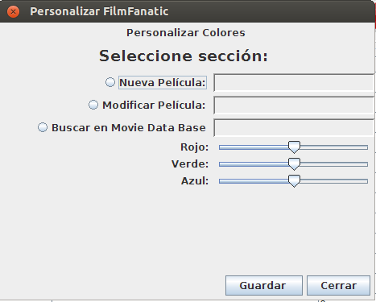

En esta pantalla usted podrá cambiar los colores de los botones y de los títulos de cada sección de la aplicación.
Para personalizarlos colores debe ir al menú "Personalizar" y elegirla opción "Cambiar colores del programa", como se muesta en la siguiente imagen
Y una vez abierto , verá una ventana donde podrá elegir el color de cada sección elegida previamente.
Cuando tenga el color elegido para cada sección , pulse guardar y podrá ver los cambios.